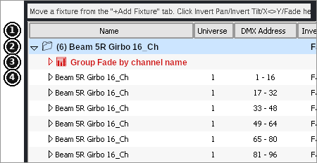
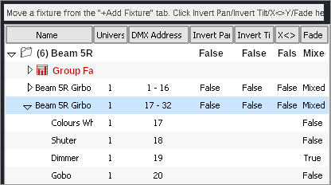
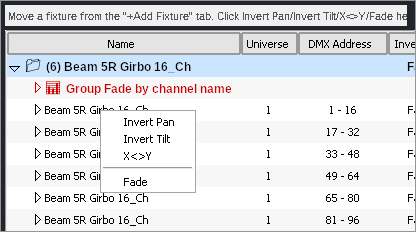
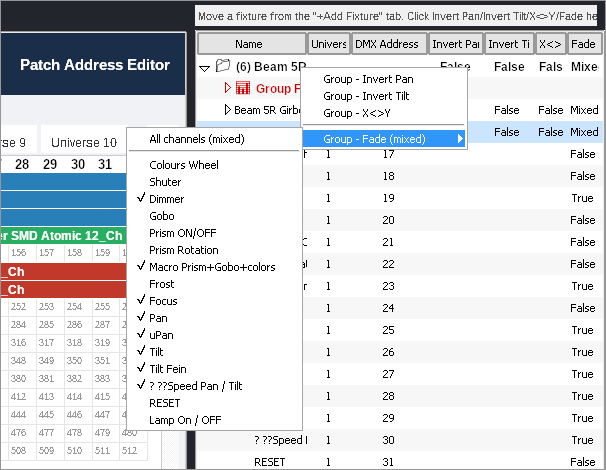

For: FullPlayer
The right side of Setup & Patch lists the patch of the open project: its groups, the fixtures of each group and the channels of each fixture. A group is a set of fixtures added together; it carries the name given to it then (often the name of the profile).

The group Beam 5R Girbo 16_Ch of Andrei_edit.x1 open: six fixtures of 16 channels.
| 1 | The columns - Name, Universe, DMX Address (the first and the last channel of the fixture), then Invert Pan, Invert Tilt, X<>Y and Fade (below). |
| 2 | A group - its triangle opens it; in brackets, how many fixtures it has. |
| 3 | Group Fade by channel name - under it, one row for each channel name of the group, with the Fade of that channel in all the fixtures of the group. |
| 4 | A fixture - its triangle opens its channels, each with its address and its Fade. |
Under the last group, Total: gives the number of fixtures of the project. A double click on the name of a fixture renames it (Enter or a click elsewhere keeps the new name, Esc leaves the old one).
The list is narrower than its columns, so on a 1366 x 768 screen the last ones are past the right edge. Drag the line between the headings Name and Universe to the left: the names get shorter and every column comes into view. The right click (below) changes the same settings without the columns.

The same list with the Name column narrowed: a fixture open, the Fade of each of its channels.
These three settings change what a fixture receives, not what the buttons hold: they are applied to the DMX on its way out, so every button, slider and effect follows them.
| Setting | When it is True | For |
|---|---|---|
| Invert Pan | the pan of the fixture is sent turned round: a value v goes out as 255 - v (the fine pan too). | a fixture hung the other way round; one that must move as the mirror image of its neighbour. |
| Invert Tilt | the same for the tilt (and the fine tilt). | a fixture on the floor in a rig hung from the truss, or the reverse. |
| X<>Y | pan and tilt change places (and their fine channels). | a fixture mounted on its side. |
They are changed with the right click (below): on a fixture, for that fixture; on a group, for all its fixtures. A group whose fixtures differ shows Mixed.
Important: the program must know which channel of the fixture is the pan and which the
tilt; it reads them from the fixture's profile (.lfi2). When the profile is not found, or has no channel
of that kind, a message says that the setting does nothing yet and names the fixtures. Then choose the folder of the
profiles (Fixtures folder (.lfi2) in the Option tab) or correct
the profile in the Fixture Editor.
When a chase goes from one step to the next, a channel with Fade True moves to its new value during the fade time of the step; with Fade False it jumps to it at the start of the step. Channels that pick something - the colour wheel, the gobo, the shutter, a macro - are usually set to False, so that they do not run through the colours or gobos between two steps. The first values come from the profile when the fixture is added.
The column shows True, False, or Mixed for a fixture or a group whose channels differ. It is changed with the right click too: for one channel, one fixture (all its channels), a group, or one channel name in a whole group.

The right click on a fixture.

The right click on a group: its three settings and Fade, with a line for each channel name. A tick: Fade on in every fixture of the group.
The right click on a row - or on several rows selected with Ctrl or Shift - opens a menu with Invert Pan, Invert Tilt, X<>Y and Fade, ticked when they are on ((mixed) when they differ); a click on one turns it on or off. On a group they begin with Group -. For more than one fixture, Fade opens a list: All channels, then one line for each channel name - Dimmer, Pan, Gobo and so on - which changes that channel in all of them. On a single channel the menu has only Fade.
Tip: the patch is changed here and in +Add Fixture; what changes counts at once and goes into the project file with Save.